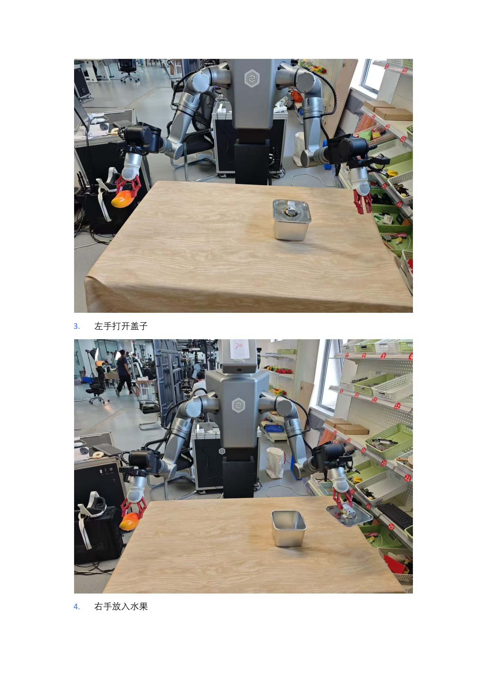

EXP-02 · 8 学时
LDT-01 遥操作数据采集
按家庭场景默认布局布景，用 LDT-01 主从遥操作双臂演示「开盖—取物—入罐—盖盖」，把每一次成功示范录成训练要用的原始数据。
00课程节奏：五星学习法 · 8 段微课（每段 ≤ 15 min）
本实验按五星学习法组织：先用"示范录了却抓空"的真实故障聚焦问题，再用「提线木偶」激活旧知，接着示证新知（LDT-01 遥操作端 + 主从映射动画），然后动手应用新知完成开机布景与采集循环，最后借排障与拓展融会贯通。全程切成 8 段微课、每段不超过 15 分钟，段间停顿 1~2 分钟消化；纯讲授合计约 100 分钟，其余课时用于动手实操与个别辅导。
① 聚焦问题
课段 1 · 12 min
"示范录了 200 组却抓空"故障引入
② 激活旧知
课段 2 · 8 min
提线木偶 · 主从映射 · 帧动作配对
③ 示证新知
课段 3~4 · 27 min
遥操作端硬件 + 主从映射动画
④ 应用新知
课段 5~7 · 40 min
开机布景 + 采集循环 + 产线估算
⑤ 融会贯通
课段 8 · 13 min
排障口诀 · 拓展 · 思考题
| 课段 | 五星阶段 | 时长 | 对应章节 | 本段任务 |
|---|---|---|---|---|
| 课段 1 | 聚焦问题 | 12 min | §01 + §02 前半 | 抛出"示范录了 200 组却总抓空"的故障，明确采集目标 |
| 课段 2 | 激活旧知 | 8 min | §02 后半 | 用提线木偶旧知解释主从映射与帧-动作配对 |
| 课段 3 | 示证新知 | 15 min | §03 | 认识 LDT-01 遥操作端、从动臂、安全设备与双人制 |
| 课段 4 | 示证新知 | 12 min | §06 | 看主从映射与帧-动作对动画，理解 1:1 跟手 |
| 课段 5 | 应用新知 | 15 min | §04 + §05 前半 | 开机布景、新建任务、启动遥操作脚本 |
| 课段 6 | 应用新知 | 15 min | §05 后半 | 完成采集循环、坏组剔除、数据落盘核对 |
| 课段 7 | 应用新知 | 10 min | §07 | 用有效数据产线估算器算有效组数与时间预算 |
| 课段 8 | 融会贯通 | 13 min | §08~§10 | 排障口诀收口，拓展阅读与思考题拔高迁移 |
讲课提示：课段 1/2 以讲授 + 提问为主；课段 3~4 用实物 + 动画；课段 5~6 边讲边演；课段 7 学员独立完成；课段 8 答疑拔高。段间停顿 1~2 分钟。
01学习目标课段 1 · 聚焦问题 · 12 min
- 掌握 LDT-01 设备开机流程与双人安全制：操作员 + 安全员，2 米半圆清场。
- 理解主从映射：主动臂怎么动，从动臂就怎么跟，人的示范因此被完整记录。
- 会在上位机完成新建任务 → 预览 → 开始采集（3 秒内握持）→ 停止当前组的完整循环。
- 养成数据质控习惯：坏组当场点「本次采集失败」，有效组数对齐案例约 200 组口径。
02原理：主从映射与示范数据课段 1 收尾 + 课段 2 · 激活旧知 · 8 min
❓ 聚焦问题（课段 1）学员最常遇到的怪事：示范录了 200 组，训练出来机器人却总在抓空——一查发现有些组开头几拍是空抓的。问题出在哪？带着这个故障听完全课——到课段 6 你会亲手让它永不入库。
遥操作像「提线木偶的反向版」：你手里的主动臂是发令端，桌上的从动臂是执行端——主动臂转多少度，从动臂跟着转多少度。你用它做一遍开盖入罐，系统就同时记下三路相机画面和每一拍的关节角度，这正是后面训练要的「画面 + 动作」配对样本。行为克隆没有捷径：你演得越稳、场景越一致，机器人学得越像。
输入
你的双手操作主动臂：肩/肘/腕七轴姿态 + 夹爪捏合量。
跟随
从动臂 7 轴按主端指令同步运动，500Hz 通信保持跟手。
同步录制
头部/左腕/右腕三路相机 + 关节角，按拍对齐写入一组数据。
质控
打滑、碰盖、超时的组当场作废，绝不带病入库。
↺ 激活旧知（课段 2）回忆提线木偶：你拉线，木偶就动。遥操作是它的反向版——你手里的主动臂是发令端，桌上的从动臂跟着转。系统同时记下画面和关节角，正是训练要的"画面+动作"配对样本。
生活化类比：像带着孩子手把手教叠衣服——你的手是「主端」，孩子的手是「从端」；录像里同时存着「你看到的画面」和「手的走势」，下次他看图自己叠，就是机器人在推理。
03硬件与安全课段 3 · 示证新知 · 15 min
LDT-01 遥操作端
主动臂：你双手握持发令，决定从动臂怎么动；附二指夹爪。
从动臂
真机执行端：按主端指令同步运动，承担抓、拿、放。
安全设备
急停按钮（+ 双脚可踩急停）；双人制：一人操作、一人观察。
状态指示
上位机 localhost:8699 具身智能机器人平台 + 底部启动进度条。
🔌 唯一入口（看图操作）开机后开谷歌浏览器，输入
localhost:8699/#/robotManage（或点书签）进入具身智能机器人平台；清空从臂周围杂物、人员不要站在从臂附近，再点「一键启动」——等待底部进度条到 100%，主从臂进入遥操作状态并闭合两侧夹爪，即可开始。🦺 两人配合采集时注意不要磕碰桌面，两人配合更佳；一旦发生磕碰，及时踩下急停，避免二次伤害。材料提醒（原文 5.1 家庭场景）：由于机械臂为工业机械臂，场景道具建议使用硬质材料（如教程所示不锈钢罐 + 盖子、可重复抓放的实心水果），既耐磕碰又避免夹爪打滑伤物，铁罐/芒果落下也不易损坏桌面。
04操作步骤：家庭场景采集循环课段 5~6 · 应用新知 · 2×15 min
1开机布景
侧面电源 → 主机 → 夹爪张开收回，按默认布局摆好罐与芒果
侧面电源 → 主机 → 夹爪张开收回，按默认布局摆好罐与芒果
→
2新建任务
localhost:8699 任务管理 → 新建任务，名称/描述英文、数量写足
localhost:8699 任务管理 → 新建任务，名称/描述英文、数量写足
→
3示范录制
点开始后 3 秒内握持操作端 → 左开盖 → 右放芒果 → 左盖盖 → 停止当前组
点开始后 3 秒内握持操作端 → 左开盖 → 右放芒果 → 左盖盖 → 停止当前组
→
4组间质控
正常：复原场景进下一组；失误：点「本次采集失败」再重来
正常：复原场景进下一组；失误：点「本次采集失败」再重来
📋 新建任务（看图操作）左侧「任务管理」→「新建任务」。任务名称、任务描述为必填；任务描述建议用英文写明做的事（会写入训练标签）；采集数量可以写大一些，后续可排除失败项。
🎬 开始 / 停止三件套环境恢复到初始状态后点「开始数据采集」→ 三路摄像头出画面 → 完成当前动作点「停止当前组」。正常：恢复桌面环境直接进下一组；失败：点「本次采集失败」→ 恢复桌面 → 再开始下一组。

- 一轮动作节奏：左手开盖 → 右手取芒果入罐 → 左手盖回 → 保持 1 秒收尾再停止。
- 组间复原：把芒果取出放回定位点、盖子离罐摆好，桌面擦净再点下一次开始。
- 编号规则：save_data 自动编号，家庭案例从 180 号段起步；记下每组好坏与编号，供 EXP-03 切段。
05关键命令与数据落盘随课段 5 / 6 对照使用
# ① 启动遥操作（摘自 LDT-01 开发者版） cd /home/lindenbot/iflytek_armtele_project/start_bash/01teleoperation . ./01start_tele.sh # 等 5 秒听到「嗒」声：第 3 关节转相机朝两侧 → 第 4 关节举臂 → 全关节回初始姿态 # ② 上位机入口（浏览器） localhost:8699/#/robotManage # 任务管理 → 新建任务 → 预览 → 开始采集 # ③ 采集落盘结构（一组 = 一个编号目录） /home/lindenbot/save_data/ ├─ 180/ # 编号目录（最大编号 = 最新一组） │ ├─ robot_data.csv # 每拍关节角 │ └─ cam_head/ cam_left/ cam_right/ # 三路视频帧 └─ ...
3 秒规则：点「开始数据采集」后必须在 3 秒内握持操作端，否则开头几拍是空抓——这种组直接标「本次采集失败」。
06动画：主从映射与帧-动作对课段 4 · 示证新知 · 12 min
动画：黄球（主端）与绿球（从端）沿同一轨迹同步运动表示 1:1 主从映射；下方同一拍的「画面条 + 动作条」被光点扫过，说明每一帧数据都是「看到什么 + 手怎么动」的严格配对。
观察若某几拍主从映射出现延迟或丢拍，画面与动作就会「错帧」——模型学到的映射随之错位。所以采集中出现跟手迟滞要立即停组作废，而不是硬录。
07互动：有效数据产线估算课段 7 · 应用新知 · 10 min
估算「计划轮数 × 通过率」能否凑够案例口径的有效组数
单轮耗时（秒）
计划轮数
预计失败率 15%
等待计算……
复盘口径：家庭案例采集数据约 200 次左右才支撑稳定复现——把失败率压下去，比盲目加轮数更省时间。每组失败都记一笔原因（打滑/碰盖/超时），下一组前先改场景再开录。
08常见问题课段 8 · 融会贯通 · 13 min
Q 3 秒内没握到操作端？
该组开头空拍，直接点「本次采集失败」作废；重建心态下一组，别带病录。
Q 遥操作端拖不动？
启动后需等 5 秒「嗒」声、关节回初始姿态再操作；启动脚本必须 source（. ./01start_tele.sh）。
Q 任务名称能用中文吗？
建议英文。名称/描述会写入 tasks 表当训练标签，规避文本编码坑（01 文档要求）。
Q 每组都要复原桌面吗？
要。模型对场景敏感，罐盖位置飘了会让影像与示范对不上——按默认布局拍照核对。
09拓展阅读课段 8 · 融会贯通
- 《01-聆动机器人数据采集流程》：任务创建参数、三分支（成功/失败/停止）处理全图解。
- 《遥操作设备LDT-01软件使用流程(开发者版)》：LED 四色、拖拽模式、插补检查（MAX=28 / MIN=14）与 Q&A。
- 《00-硬件参数》：主从臂电气参数与相机帧率，对照理解「为什么能跟手」。
- 《聆动机器人案例-家庭场景》2.x 采集章节：家庭任务动作分解与编号建议。
10思考题 · 自测课段 8 · 融会贯通
✅ 完成成果
本组产出有效示范 ≥ 目标值，坏组标记清零，编号与好坏记录表齐全。
🧠 原理收获
画出「主动臂 → 从动臂 → 三路相机 + 关节角入库」的数据通路图。
🛠 技能收获
独立完成开机 → 新建任务 → 预览 → 采集 → 停止/作废 → 复原的完整循环。
📐 评分速览
安全规范 30% + 数据质量 40% + 记录完整性 30%。
思考 1如果把芒果每次放在罐口边沿 2 厘米内随机摆，数据的「多样性」和「一致性」各会发生什么？你会怎么选？
思考 2「本次采集失败」按钮一键剔除很爽，但如果失败组占到三成，该先反省什么？（提示：场景布景、3 秒握持时机、操作熟练度。）